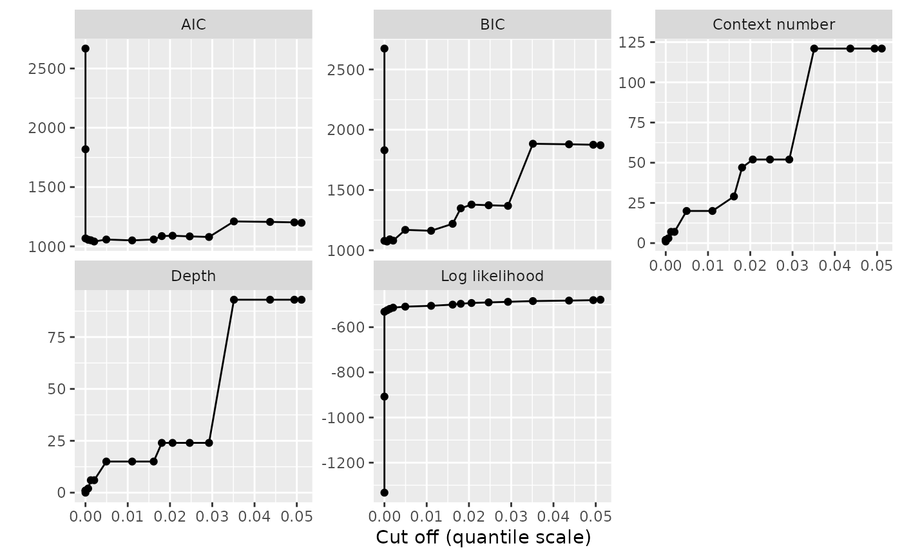

Create a complete ggplot for the results of automatic VLMC complexity selection
Source:R/autoplot_tune.R
autoplot.tune_vlmc.RdThis function prepares a plot of the results of tune_vlmc() using ggplot2.
The result can be passed to print() to display the result.
Details
The graphical representation proposed by this function is complete, while the
one produced by plot.tune_vlmc() is minimalistic. We use here the faceting
capabilities of ggplot2 to combine on a single graphical representation the
evolution of multiple characteristics of the VLMC during the pruning process,
while plot.tune_vlmc() shows only the selection criterion or the log
likelihood. Each facet of the resulting plot shows a quantity as a function
of the cut off expressed in quantile or native scale.
Examples
pc <- powerconsumption[powerconsumption$week %in% 10:11, ]
dts <- cut(pc$active_power, breaks = c(0, quantile(pc$active_power, probs = c(0.5, 1))))
dts_best_model_tune <- tune_vlmc(dts, criterion = "BIC")
vlmc_plot <- ggplot2::autoplot(dts_best_model_tune)
print(vlmc_plot)
## simple post customisation
print(vlmc_plot + ggplot2::geom_point())
